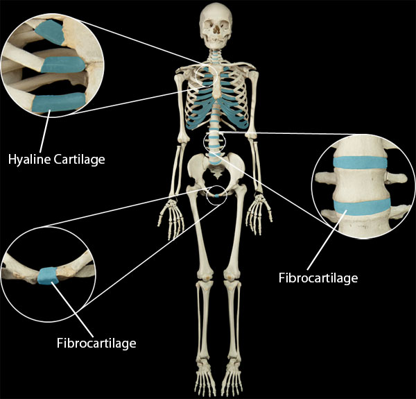

Cartilaginous joints are joints which connect two bones together through the use of cartilage. If the cartilaginous joint is composed of hyaline cartilage, it will be called a synchondrosis joint. Otherwise, if the cartilaginous joint is composed of fibrocartilage, it will be called a symphysis.
